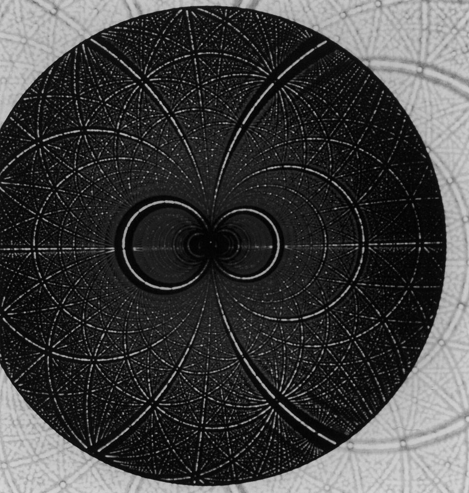
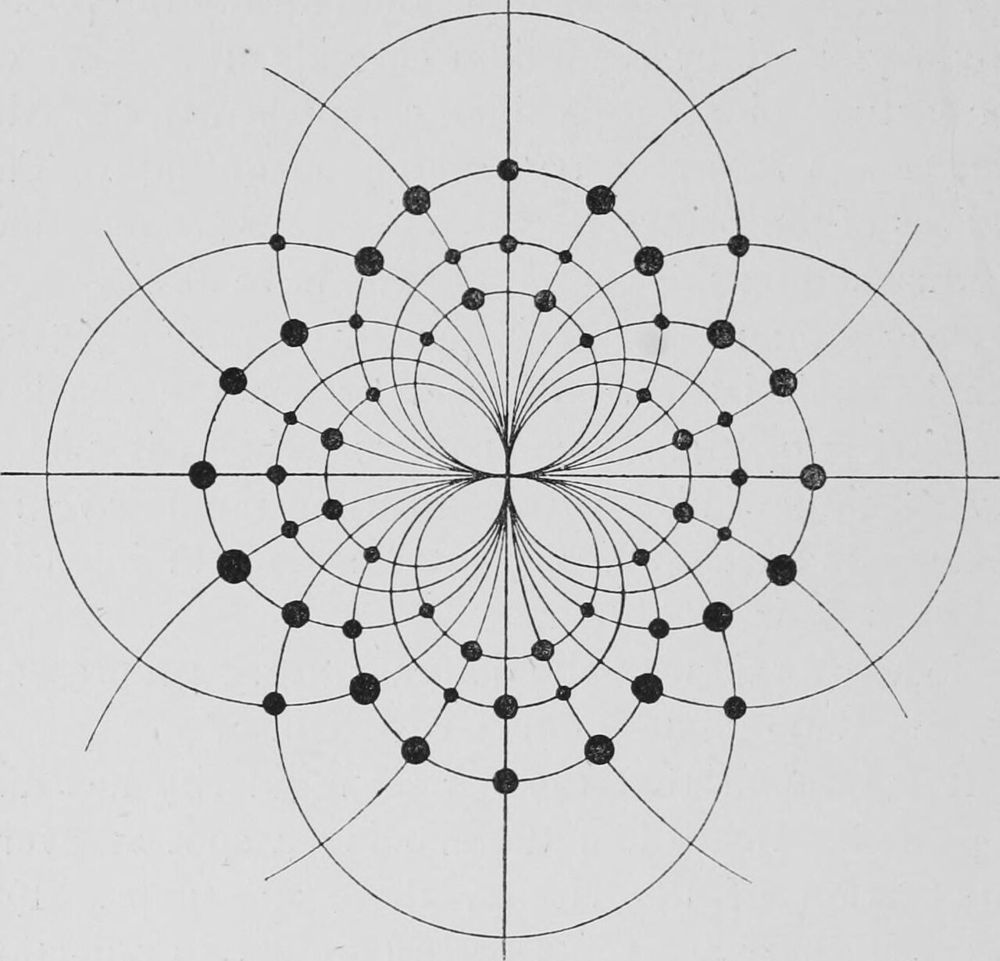
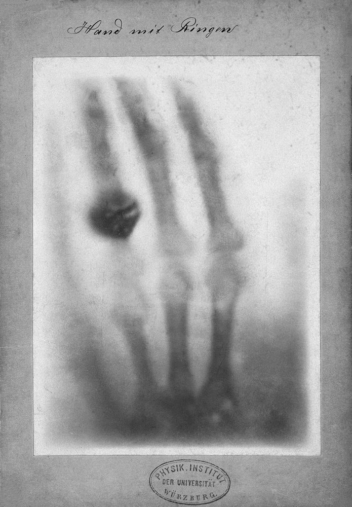
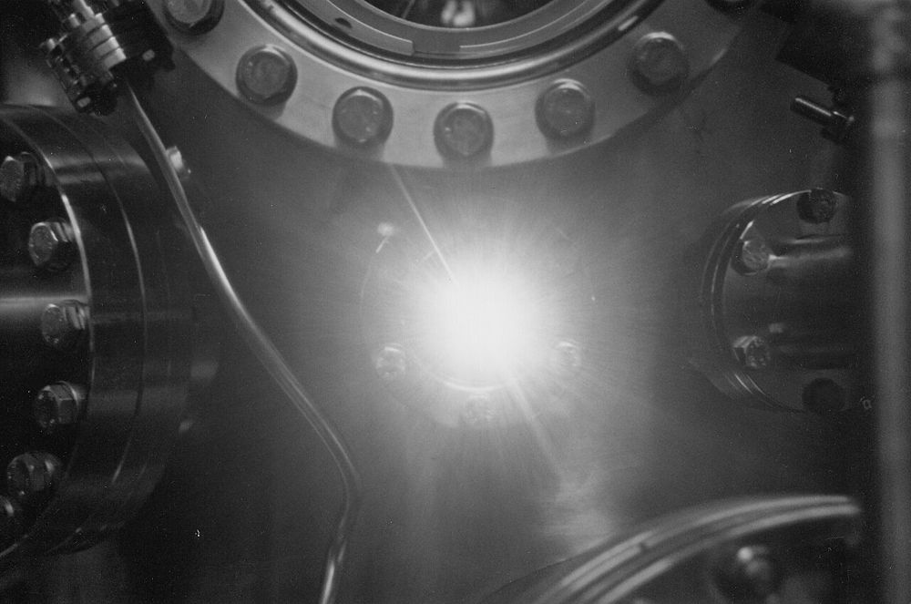

X-ray experiments,and their code.
I'm Isaac Yong, a physicist at Sogang University. I run reflectivity and diffraction experiments at synchrotrons and XFELs, then build the tools that turn beamtime into results.

MS student in Physics at Sogang University, CUPT Lab. I run X-ray reflectivity, diffraction, and coherent and Bragg diffraction experiments, and write the code that turns raw beamtime data into results.
Reflectometry and inverse problems. Recovering thin-film thickness, roughness and SLD from a reflectivity curve R(q), with physical models and machine learning together. ReflectoLearn
Coherent and time-resolved imaging. Phase retrieval for coherent diffraction imaging, and the transient formation of acoustic Bragg satellites in dynamical X-ray diffraction. QoraPhase, TraTT
Experimental data systems. Pipelines for time-resolved XFEL data, Dark-Field X-ray Microscopy image analysis, and experiment automation. QoraFlow, QoraDFXM
In the hutch. Differentiable physics simulators, reproducible analysis pipelines, and calculators that run on the old machines actually sitting next to the beamline.

Tools I build
- ReflectoLearnPython, PyTorch
A differentiable Abeles transfer-matrix simulator generates training curves on the fly, with Poisson noise, resolution smearing and beam footprint, and a 1D CNN predicts film parameters from R(q). No dataset files needed.
- QoraFlowPython, HDF5
Data toolkit for time-resolved ultrafast experiments at X-ray free-electron lasers, refactored from the lab's legacy XFEL_data system by @paulpeterkim.
- QoraPhasePython, JAX
A JAX-native, composable phase-retrieval framework for CDI. Array in, reconstruction out, with origin, mask and support conventions written into the API contract.
- X-ray ToolkitES5, offline
Offline X-ray calculators and a beamtime logbook for the beamline control room. No server and no runtime fetches, written in ES5 so it runs on the CentOS 7 default browser, Firefox 60 ESR, in the hutch.
Smaller projects
- QoraDFXMPySide6
DFXM detector-image analysis: a pure Python engine, a headless CLI and a PySide6 desktop app.
- TraTTPython
Transient acoustic Bragg-satellite solver, checked against analytic ground truth in its tests.
- codigestPyPI
A command-line tool that packs codebase context for LLMs.
- roi_rectanglePyPI
Rectangular region-of-interest helper for detector images.
- QoraGeomEarly stage
Diffraction geometry. No public code yet.

Lately
Notes
On GitHub
Upstream pull requests
Submitted pull requests; listing them does not mean they were merged.

Happy to talk beamtime, inverse problems or open source.
